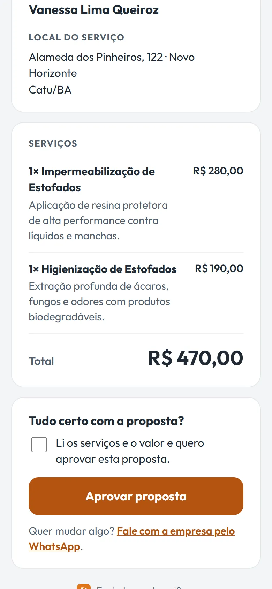
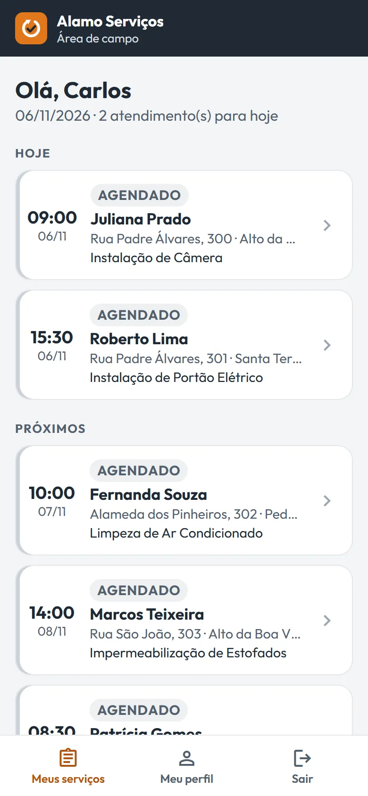

Ana Beatriz Reis Alves
Fundadora e desenvolvedora
Responsável pelo produto e pelo desenvolvimento do LoopiServ.
Orçamento, aprovação, agenda, atendimento em campo, comprovante e pós-venda pelo WhatsApp, para o cliente voltar na hora certa.
Role para ver o cicloO LoopiServ organiza a empresa de serviço etapa por etapa e lembra o cliente de voltar pelo WhatsApp na hora certa. Aí o ciclo recomeça.
Funciona no navegador, no computador, no tablet e no celular. Não precisa instalar nada.
Cada etapa alimenta a próxima. Ninguém precisa redigitar dados nem lembrar de mandar mensagem.
Monte a proposta com os serviços da sua tabela, desconto e total. Mande pelo WhatsApp com um link.
GestãoEle abre a proposta no celular, sem login, vê os itens e aprova. O sistema marca na hora.
ClienteEscolha data, endereço, técnicos e, quando o ramo usa, equipamentos. Cada técnico vê só os próprios serviços.
GestãoO técnico abre o endereço no mapa, avisa que está a caminho, conclui com relatório e registra o pagamento.
Equipe de campoFolha A4 com os dados da empresa e do cliente, os serviços e o relatório, pronta para imprimir ou salvar em PDF.
Equipe de campoMensagem de satisfação dias depois e de retorno dias ou meses depois, no prazo de cada ramo (por exemplo, 6 meses para ar-condicionado e 1 mês para piscina), e a empresa pode mudar.
SistemaTelas reais do sistema, com dados de exemplo.


Quando o serviço termina, o LoopiServ agenda as mensagens certas. O retorno sai dias ou meses depois, no prazo de cada ramo (por exemplo, 6 meses para ar-condicionado e 1 mês para piscina), e a empresa pode mudar o texto e o prazo.
Quem gerencia vê a operação inteira. Quem executa vê só os próprios serviços, sem financeiro nem cadastros.
Para donos, administradores e gerentes
Para técnicos, no celular ou no notebook
Se o seu serviço precisa de visita e o cliente volta de tempos em tempos, o LoopiServ foi pensado para você.
Cada empresa usa só as funcionalidades que fazem sentido para o seu ramo: campos do orçamento, equipamentos e mensagens prontas.
Fundadora e desenvolvedora
Responsável pelo produto e pelo desenvolvimento do LoopiServ.
Cofundador
Doutor em Educação e Contemporaneidade (UNEB) e professor do IF Baiano.
O LoopiServ nasceu de um sistema de gestão feito para uma empresa real de higienização, premiado com 1º lugar na FEMMIC (Catu – BA), 2º lugar no V CEPEX e 3º lugar na FECEAP (Macapá – AP).
Não. O LoopiServ abre no navegador. No celular, dá para adicionar à tela inicial e abrir como um aplicativo.
O sistema prepara cada mensagem com o nome do cliente e o serviço feito, no dia certo. Você confere e envia com um toque pelo seu próprio WhatsApp, sem pagar nada por conversa.
Pode. Há sugestões prontas por tipo de negócio, e você cria os seus modelos com o nome do cliente, da empresa, o serviço e a data preenchidos automaticamente.
Não. A Equipe de campo enxerga só os atendimentos em que está escalada: endereço, o que fazer, valor a receber e o comprovante.
Sim. Cada empresa só vê os próprios clientes, orçamentos e atendimentos. Os acessos são criados pela equipe LoopiServ.
Há três planos: Piloto, Básico e Pro. As primeiras empresas entram no programa piloto. Deixe seu contato e conversamos sobre as condições.
Conte um pouco sobre o seu negócio. A gente mostra o sistema funcionando com os seus serviços.
Voltar ao início do ciclo